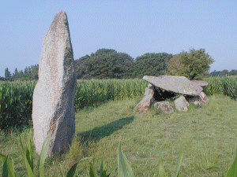

|
Un peu d'histoire : d'après les
objets retrouvés dans les nombreux dolmens
de la commune on peut supposer que la région
était déjà peuplée 2300
ans avant J.C. Les
mégalithes sont
très nombreux dans la commune.
De multiples invasions se sont
succédées et les Celtes sont
arrivés d'Auvergne en apportant la
technologie du fer.
Plus tard les dolmens ont été
utilisés comme sépulture par les
romains.
L'origine du nom Moëlan n'est pas connue,
plusieurs possibilités sont retenues :
Lan ou ermitage de Moë,
Médiolanum romain : lieu sacré du
milieu du plateau, Mouest Lann ou lieu
humide ...
|

Menhir et dolmen de Kercordonner.
Pour voir l'allée couverte de
plus près, cliquez sur l'image.
|